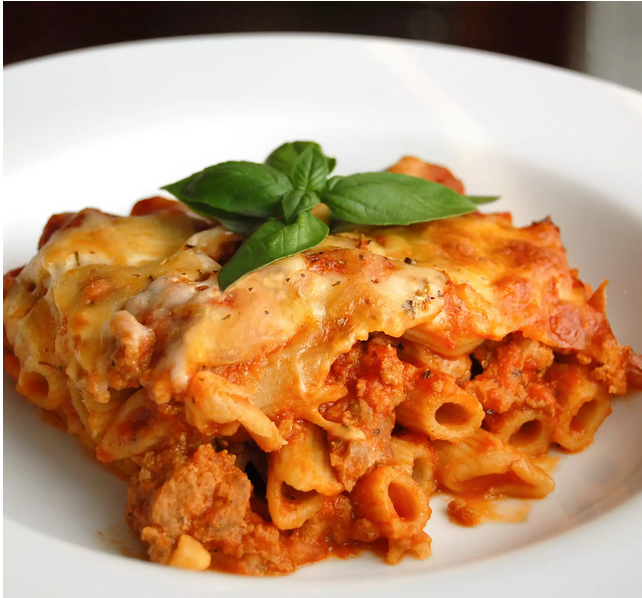

Baked Ziti

Description
Ground beef provides an indescribable taste to classic baked ziti —
and 12 pounds of cheese isn't so bad either.
Recipe creator Colleen adds that this recipe is a favorite amongst her dinner guests.
Ingredients
- 1 pound dnry ziti pasta
- 1 onion, chopped
- 1 pound lean ground beef
- 2(26 ounce) jars spaghetti sauce
- 6 ounces provolone cheese, sliced
- 1½ cups sour cream
- 6 ounces mozzarella cheese, shredded
- ½ teaspoon black pepper
- 2 tablespoons grated Parmesan cheese
Steps
- Bring a large pot of lightly salted water to a boil.
Add ziti pasta, and cook until al dente, about 8 minutes; drain.
- In a large skillet, brown onion and ground beef over medium heat.
Add spaghetti sauce, and simmer 15 minutes.
- Preheat the oven to 350 degrees F (175 degrees C).
Butter a 9x13 inch baking dish.
Layer as follows: 1/2 of the ziti,
Provolone cheese, sour cream, 1/2 sauce mixture, remaining ziti, mozzarella cheese and remaining sauce mixture.
Top with grated Parmesan cheese.
- Bake for 30 minutes in the preheated oven, or until cheeses are melted.